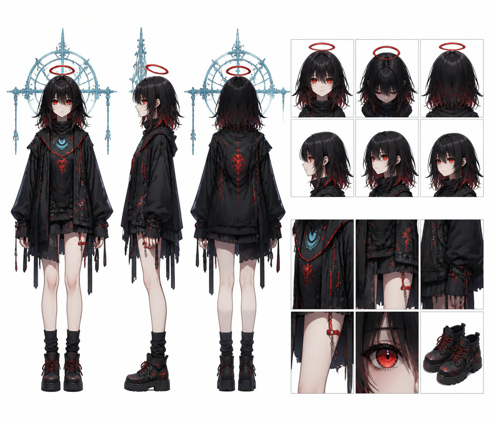
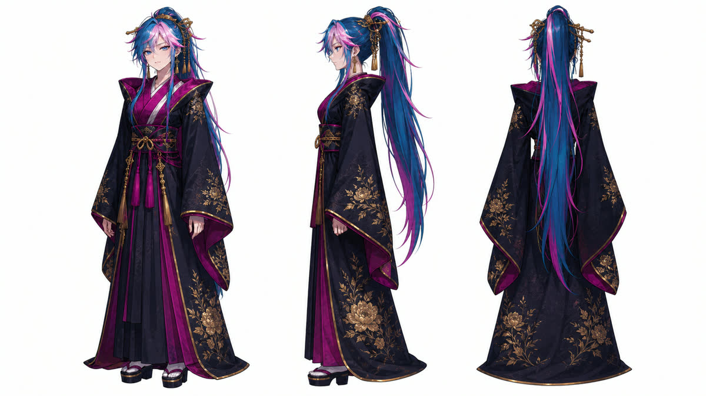
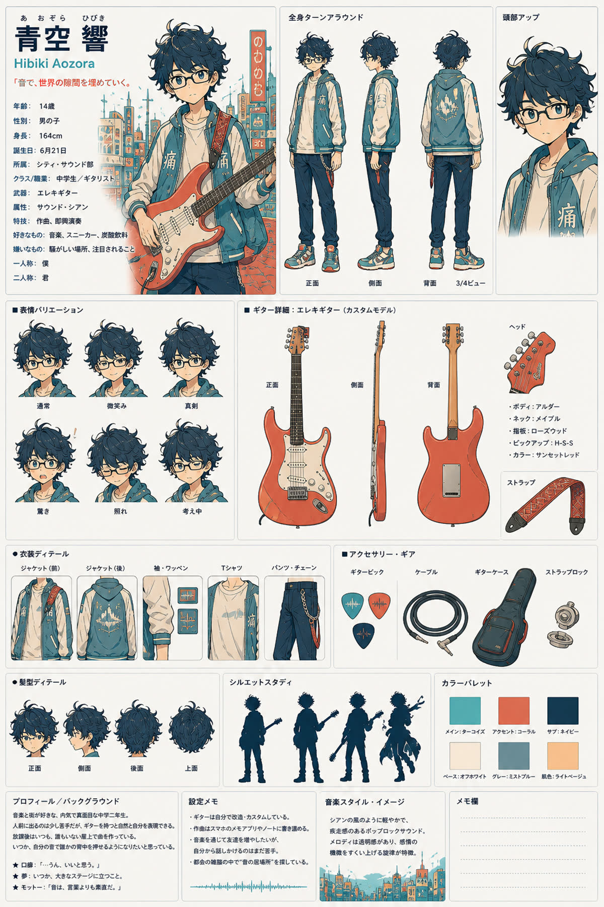

 ボカロ風158-166 BPM 死ぬ？生きる？ Angel's Algorithm 人間の生死を機械的に二択へ振り分ける判定天使。無感情な端末の奥で、未登録の第三の選択肢を探している。 設定を見る
和楽器ロック 158-170 BPM 鳥居影ノ誓火 Oathfire Under the Torii Shadow 朱い鳥居の下に立つ、落ち着いた視線の和装少女。陽光と影の境目で誓いを抱く。 設定を見る
アニメOP風 145 BPM Broken Vector Broken Vector 崩壊後の廃屋で大型銃を構え、傷と汚れを抱えたまま敵を見据える遊撃手。まだ外れていない照準を信じて反撃する。 設定を見る
 和楽器ロック 142-150 BPM 紅灯の虚勢 Pride Behind the Red Lamps 赤い灯りの雨街で、誇り高い微笑みを崩さない花魁・宵紅。虚勢の奥に隠れた照れを歌へ変える。 設定を見る
 アニメED風88-104 BPMアスファルトに広がる星座Constellations Across Asphalt街角から音を届け、夜道に小さな星座を描く少年ギタリスト・青空響。設定を見る